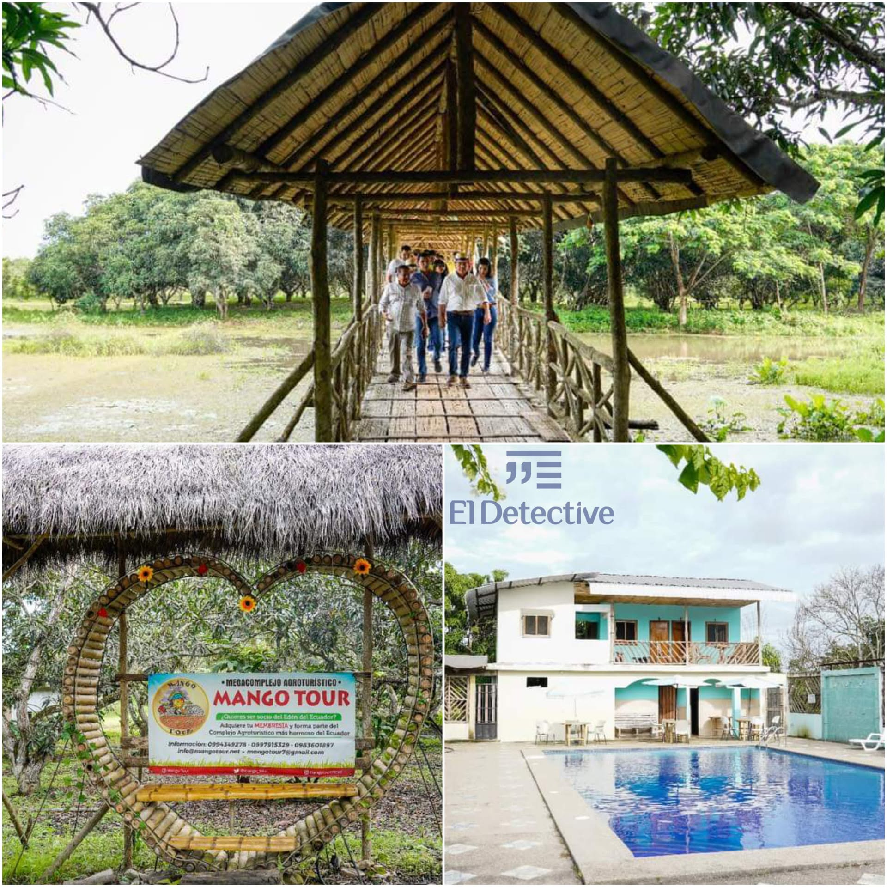
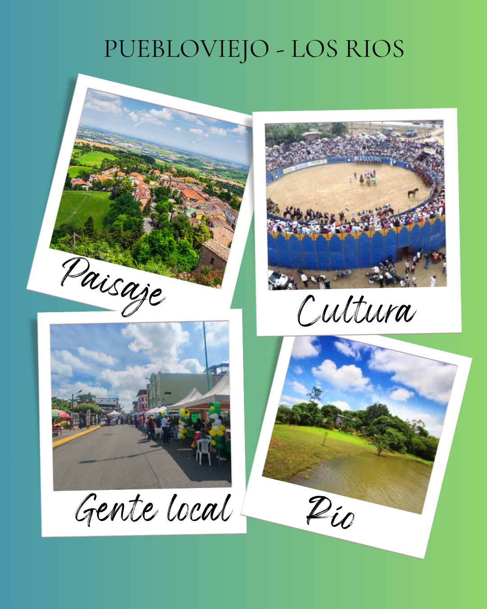
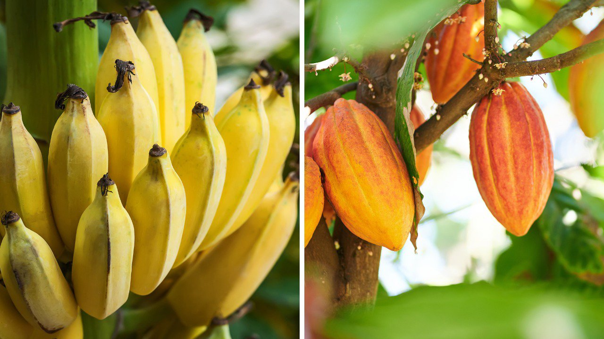

Mango Tour
Un bosque agroturístico de 1.500 árboles de mango a solo 20 minutos de la cabecera cantonal, sobre la vía al recinto Campo Alegre.
Cantón Puebloviejo — Provincia de Los Ríos
Somos una agencia montuvia dedicada a mostrar el Puebloviejo real: sus haciendas, su gente, su comida y sus casi cuatro siglos de historia a orillas del río que le da nombre.

Sobre el destino
Puebloviejo aparece mencionado desde 1616 en las crónicas del río que atraviesa la zona, y fue elevado a cantón el 7 de febrero de 1846. Hoy es el principal productor de banano de Los Ríos y cultiva cacao fino de aroma desde la época colonial, además de arroz, maíz y frutas tropicales que definen su mesa y su paisaje.
Sus parroquias de San Juan y Puerto Pechiche conservan la vida ribereña y montuvia, mientras el centro cantonal guarda la memoria de personajes ilustres como Aurora Estrada de Ramírez y Justino Cornejo Vizcaíno. Caminar por Puebloviejo es recorrer haciendas, mercados y orillas de río al mismo tiempo.
Atractivos destacados

Un bosque agroturístico de 1.500 árboles de mango a solo 20 minutos de la cabecera cantonal, sobre la vía al recinto Campo Alegre.

Piscinas artificiales de tilapia y cachama donde se pesca, se cocina y se come el mismo pescado a la orilla del agua.

Haciendas familiares que todavía trabajan el cacao fino de aroma que sale de Los Ríos hacia el chocolate gourmet de Europa.
Diseñamos cada visita con productores, pescadores y guías del propio cantón.